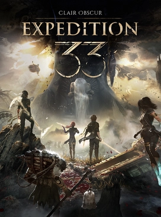

Clair Obscur: Expedition 33 é um RPG tático com ação em tempo real, ambientado em um mundo artístico e sombrio, onde heróis enfrentam a morte para quebrar um ciclo fatal.
Clair Obscur: Expedition 33 é um RPG tático com ação em tempo real, ambientado em um mundo artístico e sombrio, onde heróis enfrentam a morte para quebrar um ciclo fatal.
Blue Prince é um jogo de exploração tática, puzzles interconectados e uma narrativa sutil que se desenrola conforme você destrava salas.

Split Fiction é um jogo cooperativo em tela dividida onde dois jogadores controlam autoras presas dentro de seus próprios mundos de fantasia e ficção científica.

Dead Cells é um jogo de ação em 2D estilo roguelike. Você explora diversos cenários, enfrenta inimigos desafiadores e coleta divesos itens. Morreu? Recomeçe do zero!
Death Stranding 2: On the Beach é um jogo de ação e exploração onde você, como Sam Bridges, atravessa cenários perigosos para reconectar um mundo isolado.